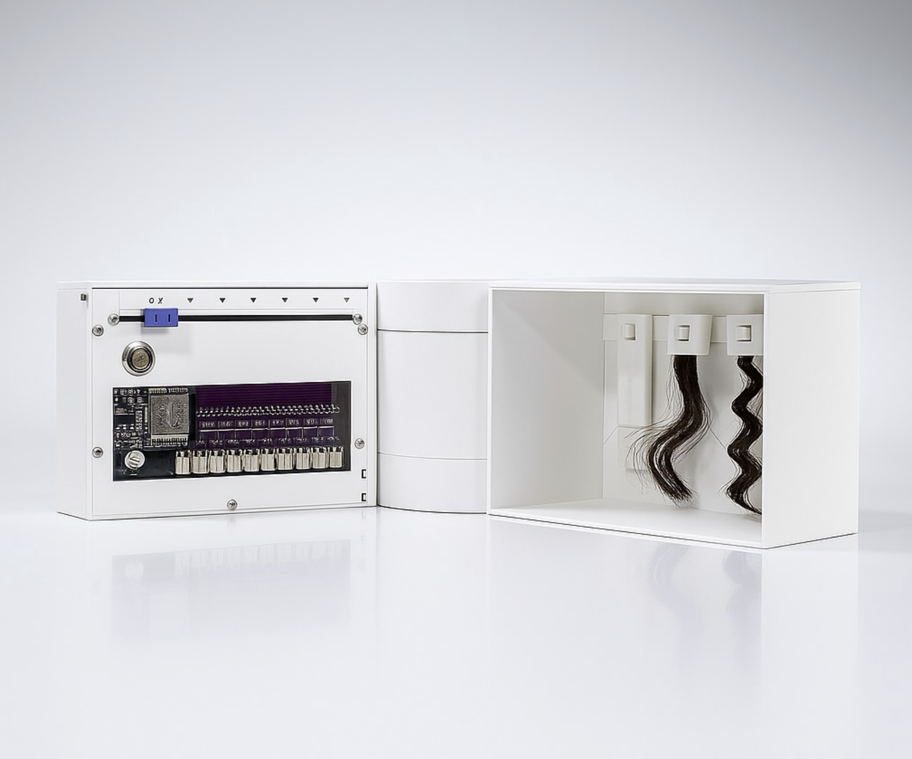
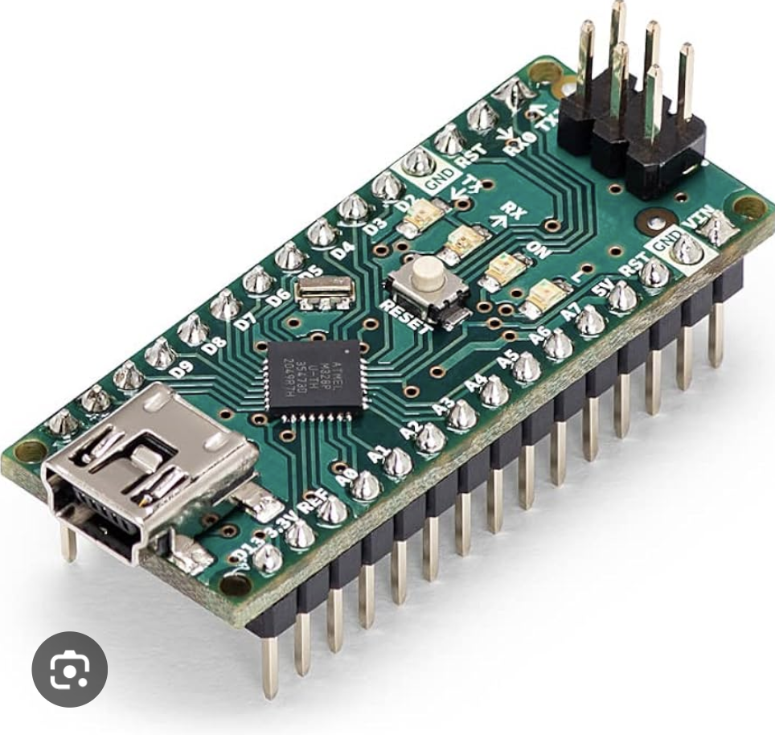
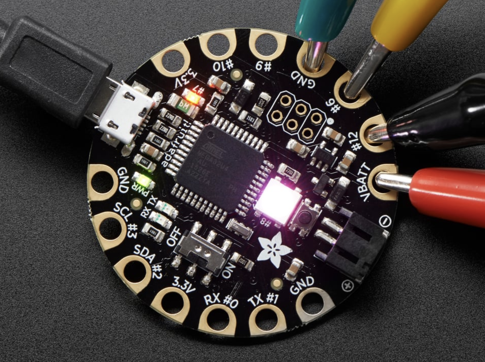

Wearables con Arduino
Día 1: Teoría
Máster en Ingeniería de Diseño Industrial
ELISAVA 2026
Bienvenidos!
Qué vamos a construir juntos
Electrónica wearable que siente tu cuerpo y responde
- Sensores de presión con velostat
- Circuitos cosidos con hilo conductor
- Luces y háptica controladas por Arduino
- Todo esto... puesto en el cuerpo
El Curso de un Vistazo
Día 1 - Teoría (2h)
Intro, mi trabajo, Arduino, electrónica, materiales wearable
Día 2 - Práctica (2h)
Primeros circuitos, sensores de velostat, hilo conductor
Día 3 - Práctica (4h)
Diseño wearable, sistemas reactivos, CONSTRUIR vuestro wearable
Días 4 y 5 - Seguimiento (2h + 2h)
Troubleshooting, refinamiento, mini-presentación
Repartido en ~2 meses. Trabajaréis en los proyectos entre sesiones.
Filosofía del Curso
Un prototipo feo que funciona vale más que uno bonito que no hace nada.
- Esperad retos. La electrónica nunca funciona a la primera.
- Depurar errores ES el aprendizaje. No es un desvío.
- Preguntad. Ayudad a los demás. Iterad.
Mi Trabajo
y el Panorama Wearable
Quién soy?

Proyecto 2: Bluesky
Imágenes
Wearables más allá del Smartwatch
Médico y Deporte
- Plantillas con sensores de presión
- Monitores de postura
- Prendas de rehabilitación
Robótica Blanda
- Actuadores neumáticos sobre piel
- Aleaciones con memoria de forma
- La zona de cruce
La Oportunidad de Diseño
Qué NO se ha hecho todavía?
- La mayoría de la tecnología wearable son cajas rígidas atadas al cuerpo
- La electrónica integrada en textiles está casi inexplorada en diseño de producto
- El hueco entre e-textiles y diseño industrial es donde entráis vosotros
Como ingenieros de diseño industrial, aportáis forma, ergonomía y pensamiento de fabricación a un campo que lo necesita desesperadamente.
Qué es Arduino?
Fundamentos de Electrónica
Qué es Arduino?
- Microcontrolador - un ordenador diminuto en un chip
- + IDE cómodo - entorno de programación sencillo
- + Ecosistema enorme - librerías, sensores, shields, comunidad
Lee entradas (sensores) y controla salidas (LEDs, motores, altavoces)

Arduino Nano

Adafruit Flora
El Superpoder de Arduino
Prototipado Rápido
Arduino no es la plataforma más potente, ni la más pequeña, ni la más barata.
Pero es la más rápida para pasar de idea a prototipo funcional.
Como diseñadores industriales, vuestro valor está en iterar rápido. Arduino os permite testear interacciones físicas el mismo día que las pensáis.
Modelo de Programación Arduino
void setup() {
// Se ejecuta UNA VEZ al encender
}
void loop() {
// Se ejecuta PARA SIEMPRE, una y otra vez
}
Pensadlo así:
setup() = Inicializar todo una vezloop() = while(true) { ... }
Pines GPIO
Digital
HIGH (5V) o LOW (0V)
Interruptores on/off
LEDs, botones
Entrada Analógica
Valores: 0 - 1023
Lee un rango
Sensores, potenciómetros
PWM (~)
Salida analógica simulada
Valores: 0 - 255
Regulación, velocidad motor
Para wearables: La entrada analógica lee sensores de presión. PWM controla el brillo de LEDs y la intensidad de motores de vibración.
Electrónica: Lo Justo
Las tres cosas que necesitáis saber
V
Voltaje
El "empuje"
Nuestro mundo = 5V
I
Corriente
El "flujo"
Se mide en mA
R
Resistencia
La "restricción"
Se mide en ohmios
V = I x R
Ley de Ohm. Lo justo para no quemar nada.
Por Qué Esto Importa para Wearables
El velostat cambia de resistencia bajo presión.
Más presión = menos resistencia = más corriente = Arduino lee un número más alto.
Este es el principio fundamental de nuestros sensores de presión:
Apretar
→
Baja la resistencia
→
Arduino lo lee
→
LED reacciona
Leer Datos del Sensor
void setup() {
Serial.begin(9600); // Iniciar comunicación serie
}
void loop() {
int valorSensor = analogRead(A0); // Leer pin A0
Serial.println(valorSensor); // Imprimir en monitor
delay(100);
}
analogRead() devuelve 0 a 1023
0 = sin presión. 1023 = presión máxima.
La función map() convierte rangos:
int brillo = map(valorSensor, 0, 1023, 0, 255);
analogWrite(LED_PIN, brillo);
Materiales Wearable
Velostat, Hilo Conductor y compañía
Velostat
Lámina conductora sensible a la presión
- Qué es: Polietileno impregnado de carbono
- Cómo funciona: La resistencia baja al presionar
- Rango: ~100kΩ (sin presión) a ~1kΩ (mucha presión)
- Barato: Pocos euros por una hoja A4
Aplicaciones
Presión plantar
Fuerza de agarre
Contacto corporal
Detección sentarse/levantarse
Detección de flexión
Construir un Sensor de Velostat
Es un sándwich:
Electrodo (tela conductora / cinta de cobre)
VELOSTAT
Electrodo (tela conductora / cinta de cobre)
Cada electrodo se conecta al Arduino. Uno a 5V, el otro a un pin analógico.
Estos los construiremos el Día 2. Hoy: entender el principio.
Hilo Conductor
Hilo que conduce electricidad
- Material: Fibras de acero inoxidable hiladas
- Resistencia: Varía según marca (~10-50 Ω/metro)
- Se cose: Con una aguja normal
- Sustituye al cable en circuitos textiles
Hilo Conductor: La Parte Difícil
Fallos Comunes
- Nudos flojos - el hilo es resbaladizo, los nudos se deshacen
- Caminos cruzados - dos hilos se tocan = cortocircuito
- Deshilachado - las hebras se separan y causan cortocircuitos
- Movimiento - el estiramiento del cuerpo rompe las puntadas
Cómo Evitarlos
- Hacer varios nudos + un toque de pegamento textil
- Planificar los caminos para que nunca se crucen
- Aislar cruces con parches de fieltro
- Dejar holgura para el movimiento corporal
El multímetro es vuestro mejor amigo. Comprobad continuidad mientras coséis. Siempre.
Otros Materiales Blandos
Tela Conductora
Tejida con fibras metálicas. Ideal para electrodos, pads de contacto grandes, blindaje.
Cinta de Cobre
Lámina adhesiva. Buena para prototipado rápido, circuitos planos. Se puede soldar.
Sensores de Flexión
La resistencia cambia al doblarlos. Genial para dedos/articulaciones.
Sensores de Estiramiento
Goma conductora que cambia de resistencia al estirarse. Para respiración, postura.
El Cuerpo como Contexto
Por qué la electrónica wearable es diferente de la electrónica de mesa:
Retos
- Movimiento constante
- Sudor y humedad
- Estiramiento de tela/piel
- Expectativas de comodidad
- Aceptabilidad social
Oportunidades
- Datos de sensor ricos del movimiento natural
- Interacción íntima
- Contexto always-on
- Conexión emocional con el objeto
- Expresión e identidad
Todo lo que funciona en la mesa se comportará diferente en el cuerpo. Siempre testad llevándolo puesto.
Qué Vais a Construir
El Briefing del Proyecto
Vuestro Proyecto
Construir un wearable que:
- Detecte una entrada corporal (presión, tacto, estiramiento)
- Procese esa entrada con Arduino
- Responda con una salida (luz, vibración, cambio de color)
- Sea realmente wearable, que se lleve en el cuerpo
Materiales obligatorios (como mínimo):
Velostat
O Hilo Conductor
+ Arduino
+ Actuador de salida
Ideas de Proyecto
Guante con Sensores de Presión
Pads de velostat en las yemas. La fuerza del agarre controla el color del LED en el dorso de la mano.
Manga de Postura
Trazas de hilo conductor en una manga. Doblar = alerta de vibración. Buena postura = brillo suave.
Pulsera Detectora de Estrés
Velostat bajo la correa de la muñeca. La presión del agarre se mapea a LEDs con patrón de respiración para feedback calmante.
Parche de Hombro Interactivo
Toca el hombro, los NeoPixels se expanden en ondas. Diferentes patrones de toque lanzan diferentes animaciones.
Esto son puntos de partida. Vuestro concepto puede ser completamente diferente!
Ejemplos en Directo
Demo en directo de 1-2 prototipos wearable
Debate Abierto
Qué os emociona?
Qué os da miedo?
Qué entrada corporal sería interesante detectar?
Antes del Día 2
Deberes:
- Instalar Arduino IDE 2.x + subir el sketch Blink
- Empezar a pensar: qué entrada corporal es interesante de detectar?
- Explorar Firewalker LED Sneakers y otros tutoriales wearable de Adafruit para inspiración
- Traer portátil + cargador a todas las sesiones
- Traer una batería portátil cargada (power bank)
Próxima Sesión: Día 2
- Subir vuestro primer sketch de Arduino
- Construir un sensor de presión con velostat desde cero
- Coser vuestro primer circuito con hilo conductor
- Leer valores del sensor y controlar LEDs
Traed el portátil. Traed curiosidad. Del resto nos encargamos.
Nos Vemos el Día 2!
Preguntas?
Wearables con Arduino | Máster en Ingeniería de Diseño Industrial | ELISAVA 2026